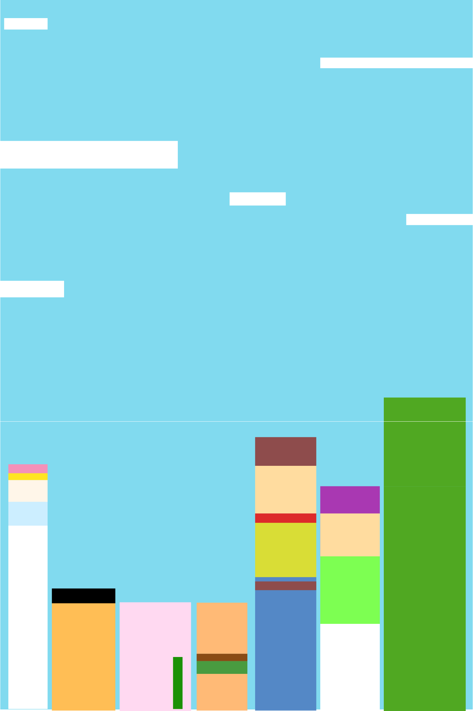
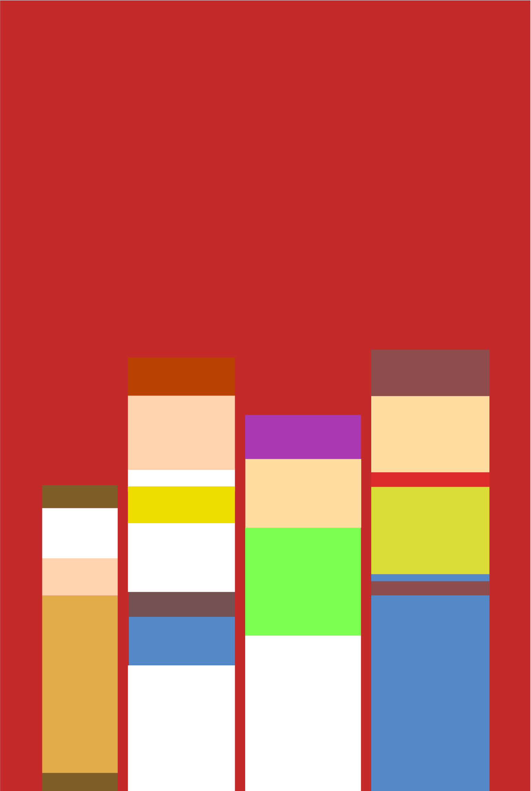
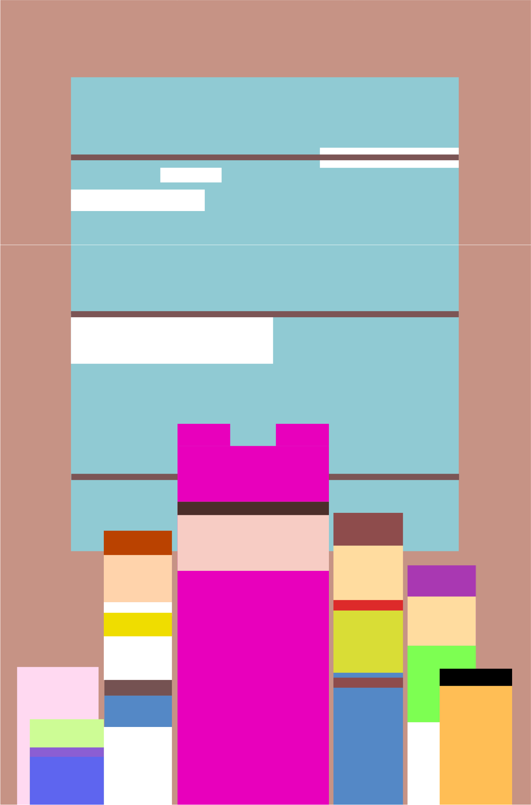
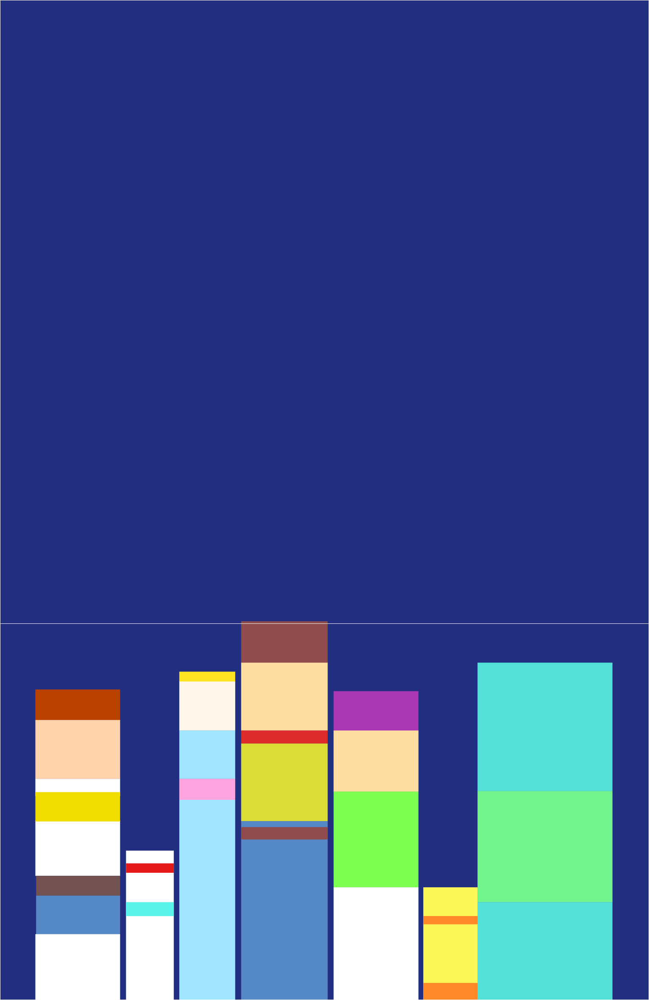

トイ・ストーリー5
ボニーの成長を見守ってきたジェシーたち。しかし、新たにやってきたタブレット〈リリーパッド〉の登場によって、ボニーは次第にデジタルの世界へ夢中になり、おもちゃたちと遊ぶ時間が減ってしまう。大切な笑顔を取り戻すため、ジェシーはウッディやバズと再び力を合わせ、新たな仲間たちとともに冒険へ。時代が変わっても変わらない、おもちゃと子どもの絆を描く感動の物語。
『トイ・ストーリー5』は、シリーズならではの笑いと感動はそのままに、現代の子どもたちを取り巻く環境の変化をテーマとして描いた作品です。スマートフォンやタブレットが身近になった今だからこそ、多くの人が共感できる内容となっており、子どもだけでなく大人にも考えさせられるメッセージが込められています。これまでシリーズを見続けてきたファンには懐かしさを感じる場面も多く、新たなキャラクターたちも物語に自然と溶け込み、作品に新鮮さを与えています。特にジェシーが物語の中心として活躍するため、これまでとは少し違った視点で楽しめるのも魅力です。アクションやユーモアのテンポも良く、家族や友人と楽しむのはもちろん、一人でも最後まで飽きずに鑑賞できます。シリーズを知っている人はもちろん、久しぶりに『トイ・ストーリー』を観る人にもおすすめできる、笑って泣ける心温まる作品です。全体として、過去作へのリスペクトを大切にしながらも、新しい時代に合わせたテーマを取り入れた続編として、多くの人が楽しめる仕上がりになっています。
シリーズ情報

トイ・ストーリー1

トイ・ストーリー2

トイ・ストーリー3

トイ・ストーリー4